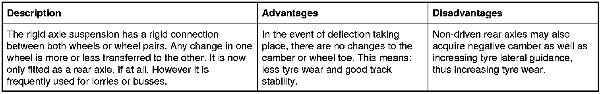
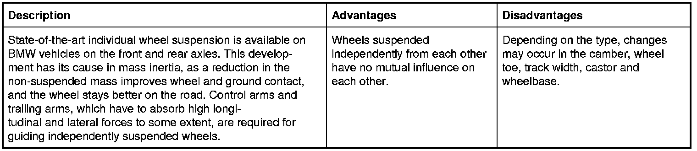

6. Wheel Suspension
6. Wheel suspension
Those parts which connect the wheel to the mostly load-bearing floor elements of the bodywork and guide it in the required direction belong to the wheel suspension. They are connected by axles or other comparable structures and guided by the arms. The wheel suspension plays a decisive role in the handling characteristics of a vehicle. Two main groups have to be distinguished: 1. Rigid axle suspension and 2. Independent wheel suspension.
6.1 Rigid axle suspension

6.2 Independent wheel suspension
